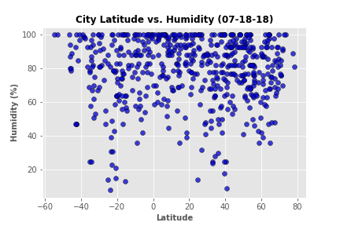

Latitude vs. Humidity

In the polar regions, temperatures are low, dew point temperatures are also low, and relative humidity is high. The air in polar regions is usually around 80% saturated. Even though the water vapor content of the air is low, the water vapor capacity is low as well. Saturation occurs in air that holds very little water vapor even when the air is relatively dry. As a consequence, the relative humidity is higher at polar regions than at 30o latitude, while the specific humidity is higher at 30o than at polar regions. Not all regions of the earth around 30o latitude are desert. As one traverses 30o of latitude across the continental United States, one notices a distinct difference between the climate of Arizona and that of Alabama. The air masses that prevail over the western deserts of the U.S. come from the Pacific Ocean. The Pacific Ocean is normally very cool. Air over the Pacific is also cool. As westerly winds move this air over land, its temperature increases but its water vapor content does not. Hence the air over the western deserts has a high temperature but a low dew point and very low relative humidity. The Gulf of Mexico, on the other hand, is quite a bit warmer as is the air over it. When this air moves over the southeastern U.S. it warms only a little while maintaining the same water vapor content. The air and dew point temperatures are very close and the relative humidity is consequently quite high. This is why the southwest U.S. is normally hot and dry while the southeast is hot and muggy.